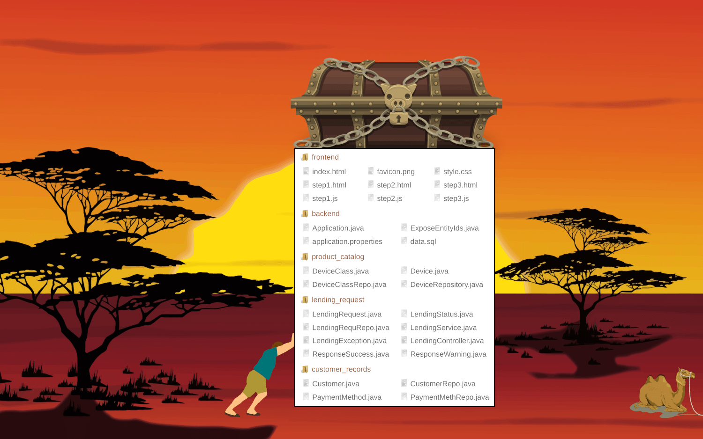

* Das Werteversprechen der Cloud von anderen Ansätzen unterscheiden können
* Das Cloud-Betriebsmodell von klassischem Hosting unterscheiden können
* Die Bedeutung von **Virtualisierung** für Hosting und Cloud einschätzen können
* **Elastizität und Skalierung** in der Cloud beschreiben können
* Verschiedene Arten von **As-a-Service**-Angeboten einordnen können
Verteilte Anwendungen in der Cloud
* Die Vor- und Nachteile einer **Microservice-Architektur** erklären können
* Die typischen Probleme monolithischer Anwendungen einordnen können
* Typische Architekturmuster wie **API-Gateway** kennen
* Die Begriffe **12-Faktor-App** und **Cloud Native App** erklären können
* Die Wichtigkeit von **Observability** für verteilte Anwendungen verstehen
* Nutzen und Zusammenspiel von **Logs, Traces und Metriken** beschreiben können
Link zum Video
Das Video bezieht sich an manchen Stellen noch auf die Entwicklung mit Java und
dem Spring-Framework. Auch wenn wir inzwischen Node.js/JavaScript in der Vorlesung
verwenden, sind die Grundprinzipien jedoch dieselben.
Anwendungen zum Synchronisieren von Dateien wie Dropbox, OneDrive oder Owncloud
werden umgangssprachlich oft als Cloud bezeichnet. Man sagt, dass die Dateien
_mit der Cloud synchronisiert_ werden. Dies ist jedoch problematisch, da „Cloud”
hier lediglich sinnbildlich für einen irgendwie gearteten Onlinedienst steht.
Hinzu kommt, dass zumindest Owncloud gar keine Cloud-Anwendung ist, sondern eine
in PHP implementierte, traditionelle Webanwendung. Nach dieser Definition müsste
demnach jede Webanwendung auch eine Cloud-Anwendung sein.
Schon früher war es insbesondere für kleinere Unternehmen üblich, die Hardware zur
Bereitstellung eines Onlinedienstes nicht selbst zu betreiben. Dieses Modell wird
Hosting genannt, da der Anbieter zwar die Hardwareplattform (den Host) zur Verfügung
stellt, Installation und Betrieb der Anwendung aber immer noch selbst vorgenommen
werden müssen.
Dedicated Root Server
Hier vermietet der Anbieter einen dedizierten Computer an den Kunden.
Installation und Einrichtung müssen, sofern es kein „managed” Angebot
mit zusätzlicher Dienstleistung ist, aus der Ferne selbst erledigt werden.
Im Gegenzug können jedes beliebige Betriebsystem und jede Software
aufgespielt werden.
Virtual Private Server
Hier steht eine virtuelle Maschine zur Verfügung, die sich weitgehend wie
dedizierte Hardware nutzen lässt. Die Ressourcen können jedoch geringer
ausfallen, da die Hardware von vielen Kunden geteilt wird. Die Installation
eines eigenen Betriebssystems kann ebenfalls mit Einschränkungen verbunden sein.
Web Hosting
Hier wird lediglich der Webserver virtualisiert und etwas Speicherplatz in
einer vorkonfigurierten Serverfarm angeboten. Die Einstellungsmöglichkeiten
sind sehr begrenzt und oft auf traditionelle Webanwendungen mit PHP als
Programmiersprache und MariaDB als Datenbank zugeschnitten.
Um ökonomische Skaleneffekte auszunutzen, beruhen die meisten Hostingangebote auf
der Virtualisierung bestimmter Ressourcen, wobei der Begriff auf zwei Arten definiert
werden kann.
Virtualität ist die Eigenschaft einer Sache, nicht in der Form zu existieren,
in der sie zu existieren scheint, aber in ihrem Wesen oder ihrer Wirkung einer
in dieser Form existierenden Sache zu gleichen. Virtualität bezeichnet also eine
gedachte Entität, die in ihrer Funktionalität oder Wirkung vorhanden ist.
Wikipedia zum Begriff „Virtualität”
Virtualisierung bezeichnet in der Informatik die Nachbildung eines Hard- oder
Software-Objekts durch ein ähnliches Objekt vom selben Typ mit Hilfe einer
Abstraktionsschicht. Dadurch lassen sich virtuelle (d. h. nicht-physische)
Geräte oder Dienste wie emulierte Hardware, Betriebssysteme, Datenspeicher oder
Netzwerkressourcen erzeugen.
Wikipedia zum Begriff „Virtualisierung”
Virtualisierte Hardware bietet die größte Flexibilität, da sie sich aus Kundensicht
wie dedizierte Hardware verhält. Der Kunde mietet zwar keinen physischen Computer,
kann aber dennoch beliebige Software aufspielen.
Preisgünstigere Angebote virtualisieren in der Regel nur das Betriebssystem, wodurch
mehr Kunden bedient werden können. Die Installation beschränkt sich daher auf kompatible
Systemumgebungen und Anwendungen.
Einfache Hostingangebote virtualisieren lediglich die Serveranwendung. Die Kunden bekommen
eine eigene Domain und etwas Speicherplatz mit sehr beschränkten Einstellungsmöglichkeiten.
Die Grundidee der Cloud ist, die Bereitstellung und den Betrieb verteilter
Anwendungen so weit wie möglich zu automatisieren. Eine Cloudumgebung besteht
daher aus einem großen Rechencluster, dessen Ressourcen auf viele Anwendungen
aufgeteilt werden. Manuelle Installationsschritte sollen vermieden werden.
{.mb-0}
Isolation
Die physischen und virtuellen Maschinen sowie Speicherressourcen einer Cloudumgebung
werden vollständig abstrahiert, wodurch jede Anwendung einen eigenen, **virtuellen
Computercluster** erhält. Häufig (aber nicht immer) wird dabei auch das Netzwerk
virtualisiert, wodurch interne Services in einem **privaten Netzwerk** vor öffentlichen
Zugriffen geschützt werden können.
{.mb-0}
Skalierung und Elastizität
**Skalierung** beschreibt die Anpassung der zur Verfügung gestellten Ressourcen
entsprechend dem Leistungsbedarf einer Anwendung. Beim klassischen Hosting und
bei sehr einfachen Cloud-Installationen ist dies nur durch manuelles Eingreifen
möglich. Echte Cloud-Anwendungen sind jedoch **elastisch**, so dass der Cluster
die Ressourcen automatisch skalieren kann.
{.mb-0}
Variable Kosten
Aufgrund der dynamischen Ressourcenzuteilung bieten viele Cloud-Angebote eine
**nutzungsabhängige Abrechnung**, die sich nach Anzahl der tatsächlich genutzten
Minuten zur Ausführung von Programmcode, tatsächlich belegtem Speicherplatz
oder Netzwerktraffic richtet. Im Vergleich zu klassischem Hosting fallen die
durchschnittlichen Kosten daher oft geringer aus.
{.mb-0}
Hosting
Die Software wird gehegt und gepflegt wie ein Haustier.
Cloud
Die Software wird wie Vieh in der Massentierhaltung behandelt.
Cloudangebote werden häufig mit dem Namenszusatz „as-a-Service” angeboten,
wie beispielsweise „Database-as-a-Service“ oder „Software-as-a-Service".
Damit ist gemeint, dass die jeweilige Software **nicht klassisch lizenziert,
sondern als Dienstleistung** vermarktet wird. Installation, Betrieb und Pflege
werden fallen in die Verantwortung des Anbieters, wodurch diese aus Kundensicht
komplett ausgelagert werden können.
### Infrastructure-as-a-Service {.mb-3}
Im einfachsten Fall stellt die Cloud virtuelle Maschinen zur manuellen Einrichtung
sowie dazugehörige Dienste wie Objektspeicher und Netzwerkrouting zur Verfügung.
Lediglich die Bereitstellung aus Sicht des Cloudanbieters wird dabei automatisiert.
### Platform-as-a-Service {.mb-3}
Auf die Entwicklung von Cloudanwendungen zugeschnittene Angebote bieten eine
vorkonfigurierte Laufzeitumgebung für selbstgeschriebenen Quellcode. Deployment
und Betrieb werden weitgehend automatisiert. Es besteht jedoch die Gefahr von
Vendor Lock-In aufgrund der Verwendung anbieterspezifischer Bibliotheken.
### Software-as-a-Service {.mb-3}
Am weitesten abstrahiert sind SaaS-Angebote zur Bereitstellung ganzer Anwendungspakete.
Als Kunde registriert man sich lediglich für eine Anwendung, die gegen eine monatliche
Gebühr zur Verfügung gestellt wird. Alle Kunden teilen sich meist den Quellcode, während
die Daten getrennt werden.
Angebote wie **Function-as-a-Service** (auch **Serverless** genannt, da die Verwaltung von Serverinstanzen komplett
wegabstrahiert wird) oder **Database-as-a-Service** richten ebenfalls an Anwendungsentwickler und zählen deshalb zu
Platform-as-a-Service.
Die großen Anbieter wie Amazon, Google oder Microsoft bieten grundsätzlich eine Mischung aus allen Modellen, während
sich kleinere Anbieter wie [Heroku](https://heroku.com/){target="_blank"}, [Render](https://render.com/){target="_blank"},
[Fly.io](https://fly.io/){target="_blank"} meist auf Plattformdienste beschränken.
[MongoDB Atlas](https://www.mongodb.com/de-de/atlas){target="_blank"}, [Auth0](https://auth0.com/){target="_blank"}
und viele mehr zielen hingegen auf ganz spezielle Anwendungsfälle ab.
Viele Cloudumgebungen nutzen Container-Virtualisierung, um beliebige Workloads ausführen zu können.
Die auszuführenden Anwendungen und Services werden hierfür in **Anwendungscontainer** verpackt, die ein
**sehr abgespecktes Dateisystem** mit den notwendigsten **Bibliotheken**, **Hilfsprogrammen** sowie
dem **Anwendungscode** beinhalten und somit das zugrunde liegende Linux-System **wegabstrahieren**.
Der Anwendung wird dadurch vorgetäuscht, sie sei die einzige innerhalb des Host-Betriebssystems
ausgeführte Anwendung, was **Isolation** genannt wird.
Hierbei wird zwischen Container-Abbild (Image) und Container-Instanz unterschieden:
* **Image:** Binärpaket, das innerhalb der Cloud deployed werden kann
* **Instanz:** Tatsächlich ausgeführter Container auf einem Rechnerknoten
Die Erstellung der Images wird grundsätzlich automatisiert. Unterschiede bestehen lediglich in
den verwendeten Werkzeugen und den hierfür benötigten Konfigurationsdateien. Typische Quellcodes einer
bestimmten Programmiersprache können häufig ohne Konfiguration direkt deployed werden, wobei ein in der
Cloud laufendes **Buildpack** diese in Anwendungscontainer verpackt. Meist kann der Prozess durch
zusätzliche Konfigurationsdateien beeinflusst werden, wenn man die Container nicht alternativ selbst baut. {.mb-0}
Das folgende Beispiel zeigt einen typischen **DevOps-Workflow**, bei dem die Anwendungscontainer durch eine
Continous-Integration/Continous-Deployment-Pipeline automatisiert gebaut, in einer Container-Registrierung
abgelegt und anschließend in der Cloud deployed werden.
Link zum Video
Die Einleitung des Videos ist nicht mehr ganz aktuell, da wir in der Vorlesung inzwischen
erst die Cloud-Architektur und dann die Programmierung besprechen. Auch programmieren wir
inzwischen in JavaScript und nicht mehr mit dem Spring Framework in Java. Von den gelegentlichen
Bezügen zu Java und Spring sind die Konzepte des Videos aber auch hier allgemeingültig.
And now go! üèÅ üòÖ

Frühere Anwendungsarchitekturen, bei denen sämtliche Funktionen in einer großen Codebasis
untergebracht waren, werden heute als **Monolith** bezeichnet. Zwar kann der Quellcode
durchaus modular aufgebaut und somit leicht um neue Funktionen erweiterbar sein. Jedoch
kann die Anwendung nur als Ganzes deployed und in Betrieb genommen werden.
### Vorteile eines Monolithen {.mt-4}
* Einfache Anwendungsarchitektur mit wenigen Komponenten
* Insbesondere für kleine Entwicklerteams leicht handlebar
* Eine Programmiersprache für alle Teile der Anwendung
* Direkter Datenaustausch zwischen den Anwendungskomponenten
* Anwendungskomponenten können sich gegenseitig direkt aufrufen
### Nachteile eines Monolithen {.mt-4}
* Unpraktisch für sehr große Anwendungen mit vielen Funktionen
* Auswirkungen einer Quellcodeänderung sind oft schwer nachvollziehbar
* In großen Entwicklerteams kommt es oft zu gegenseitigen Störungen
* Kein getrenntes Deployment einzelner Anwendungsfunktionen möglich
* Vor jedem Deployment muss die komplette Anwendung getestet werden
* Fehlerkorrekturen brauchen daher oft lange, bis sie produktiv gehen
* Die Anwendung kann nur als Ganzes skaliert werden
Cloudanwendungen werden daher häufig mit einer *Microservice-Architektur* gestaltet.
Für kleine Entwicklerteams kann ein Monolith trotzdem die bessere Wahl sein. {.mt-4}
Moderne Anwendungen werden heute oft als **Microservice-Architektur** ausgeführt, in welcher die
Teilfunktionen einer Anwendung in einzelne Serverdienste ausgelagert werden. Microservice-basierte
Anwendungen sind daher immer verteilte Anwendungen. Dabei bildet jeder Microservice eine getrennte
Einheit, die weitgehend unabhängig entwickelt, deployed und betrieben wird. Meistens besitzt jeder
Microservice deshalb eine eigene Datenbank, auf deren Inhalte nur über die öffentliche Schnittstelle
des Microservices entfernt zugegriffen werden kann. Martin Fowler definiert Microservices
[auf seiner Webseite](https://martinfowler.com/microservices/){target=_blank} daher wie folgt:
* Entfernte Serverdienste als Teilkomponenten einer Anwendung
* Dezentralisierte Verwaltung und dezentrales Datenmanagement
* Entsprechen oft organisatorischer Unternehmenseinheiten
* Deshalb meist langfristig durch eigenständige Teams betreut
* Über eine öffentliche Schnittstelle entfernt aufrufbar
* Fehlertoleranter Entwurf mit evolutionärem Design
* Hoher Automatisierungsgrad für Betrieb und Weiterentwicklung
Die öffentliche Benutzeroberfläche einer Microservice-basierten Anwendung wird häufig als **Webanwendung**
oder **Mobile App** implementiert, wobei Webanwendungen zunehmend Single Page Apps sind, deren generelle
Anwendungslogik zwar im Browser läuft. Ein **Gateway-Server** versteckt dann in der Regel die einzelnen
Backend-Services vor dem Frontend. Alternativ können die Microservices aber auch so genannte **Microfrontends**
bereitstellen, die jeweils einen Ausschnitt der darzustellenden Bildschirminhalte liefern und nach dem
**Composite UI Pattern** innerhalb eines Anwendungsrahmens eingeblendet werden.
### Vorteile von Microservices {.mt-4}
* Die Services sind durch ihre Schnittstellen klar gekapselt.
* Jeder Service kann einzeln deployed und skaliert werden.
* Sprachen, Bibliotheken, … können passend zum Service ausgewählt werden.
### Nachteile von Microservices {.mt-4}
* Verteilte Systeme mit vielen Komponenten sind schwer zu programmieren.
* Microservices müssen eventuellkonsistent und fehlertolerant programmiert werden.
* Deployment, Betrieb und Überwachung bringen zusätzliche Komplexität.
Laut Martin Fowler lohnt sich eine Microservice-Architektur daher nur, wenn eine Anwendung hinreichend
groß ist und von mehreren Entwicklerteams betreut werden kann. Vgl.
[Martin Fowler: Microservice Guide](https://martinfowler.com/microservices/){target=_blank}
Microservice-Architekturen lassen sich grundsätzlich einfacher skalieren als monolithische Anwendungen,
da jeder Service getrennt deployed wird. Für jeden Service kann daher eine optimale Ressourcenzuteilung
entsprechend dem tatsächlichen Bedarf vorgenommen werden.
Bei leicht ansteigender Last könnte die Cloudumgebung beispielsweise den laufenden Instanzen mehr
Leistung zur Verfügung stellen.
In der Regel werden so genannte Skalierungstrigger, wie die Anzahl HTTP-Anfragen je Sekunde, jedoch
genutzt, um weitere Serviceinstanzen zu starten. Die eingehenden Anfragen werden dann durch einen Load
Balancer gleichmäßig auf die Instanzen verteilt.
Damit diese Art der Skalierung funktioniert, dürfen die Services allerdings keine temporären Sitzungdaten
im Hauptspeicher ablegen. Denn es kann in der Regel nicht garantiert werden, dass zusammengehörige Anfragen
stets dieselbe Instanz erreichen. Außerdem können die Instanzen jederzeit neugestartet werden, wodurch die
im Hauptspeicher liegenden Daten ebenfalls verloren gingen.
Cloud-Anwendungen, welche serverseitige Sitzungsdaten verwalten, persistieren diese daher meist in einer
Datenbank. Oft wird hierfür dieselbe Datenbank genutzt, in der auch die originären Nutzdaten des jeweiligen
Microservices liegen. Genauso oft kommen allerdings auch spezialisierte Datenbanken oder Objektspeicher
wie Redis zum Einsatz.
Idealerweise benötigt eine Anwendung überhaupt keine serverseitigen Sitzungsdaten, sondern verwaltet diese
rein clientseitig. Dadurch werden der Server entlastet und Zeitverzögerungen aufgrund einer langsamen
Internetverbindung vermieden. Gemäß
Martin Fowler's „First Law of Distributed Objects”
funktioniert dies am besten, wenn die Kommunikation mit dem Backend auf wenige Anfragen mit gebündelten
Inhalten reduziert wird.
Wird eine Anwendung nach den vorgenannten Prinzipien serverseitig möglichst zustandslos implementiert,
kann sie jederzeit problemlos hoch- oder runterskaliert werden.
Eine elastische Skalierung setzt voraus, dass jederzeit weitere Instanzen eines Services gestartet
oder nicht mehr benötigte Instanzen gestoppt werden können. Um dies zu vereinfachen, haben die Macher
der Heroku-Cloud auf der Webseite [12factor.net](https://12factor.net){target=_blank} das 12-Faktor-Manifest
mit zwölf Regeln für **Cloud Native Apps** (auch **12-Faktor-Apps** genannt) veröffentlicht. Diese lassen
sich wie folgt zusammenfassen:
* Zentral verwalteter Quellcode
* Abhängigkeiten explizit deklarieren
* Getrennte Build-, Release- und Run-Phasen
* Vergleichbare Entwicklungs- und Produktivumgebungen
Microservices werden mit modernen Werkzeugen und modernen Programmierpraktiken entwickelt. Ihr Quellcode
wird deshalb mit Werkzeugen wie Git versioniert, so dass jede Änderung daran nachvollziehbar ist. Werkzeuge
wie `npm`, `pip` oder `maven` verwalten darüber hinaus die Abhängigkeiten zu externen Bibliotheken und sorgen
für automatisierte Build- und Releaseprozesse.
Zusätzlich finden Entwicklung und Test und vergleichbaren Bedingungen wie der spätere Produktiveinsatz statt,
wofür die Produktivumgebung auf den Entwicklungs- und Testmaschinen so gut wie möglich nachgebildet wird.
* Nutzung fremder Dienste über das Netzwerk
* Unterstützende Dienste sind Ressourcen
* Konfiguration durch Umgebungsvariablen
* Adminprozesse sind einmalige Vorgänge
Microservices kommunizieren grundsätzlich über das Netzwerk bzw. das Internet mit anderen Microservices.
Andere Schnittstellen sind nicht vorgesehen, um die Microservices auf getrennten virtuellen Maschinen und
oft sogar getrennten physischen Maschinen betreiben zu können. Über die Konfiguration der Services, welche
innerhalb der Cloudumgebung vorgenommen wird, werden jedem Microservice die Netzadressen der von ihm benötigten
anderen Services mitgeteilt. Diese stehen dann zur Laufzeit als Umgebungsvariablen des Betriebssystems zur
Verfügung, da es sich hierbei um eine universale, einfache Möglichkeit handelt.
Falls administrative Aktionen wie die Reorganisation einer Datenbank oder das Löschen veralteter Daten
notwendig sind, erfolgen diese durch einmalig aufgerufene, vom eigentlichen Microservice getrennt laufende
Werkzeugprogramme.
* Ausführung als einzelner Betriebssystemprozess
* Parallelität durch weitere Betriebssystemprozesse
* Robuster und schneller Start bzw. Stopp der Prozesse
* Protokollierung durch zeitbezogene Ereignisse
Microservices sind immer in sich geschlossen und bringen sämtliche Laufzeitumgebungen, Bibliotheken und
Hilfsprogramme mit, um ausgeführt werden zu können. Sie können dadurch als einzelner Betriebssystemprozess
leicht gestartet und gestoppt werden, beispielsweise indem sie in ein Container-Image verpackt werden.
Start und Stopp müssen besonders schnell gehen, damit die Skalierung jederzeit elastisch angpasst werden
kann.
Für die Fehlersuche schreiben Microservices umfangreiche Protokollmeldungen in die Konsole (ihre Standardausgabe).
Jede Meldung wird dabei mit einem eindeutigen Zeitstempel am Anfang versehen, so dass die Protokollmeldungen
von der Cloud wie ein kontinuierlicher Datenstrom von zeitpunktbezogenen Ereignissen behandelt und archiviert
werden können.
Typische Services in der **Kontrollebene** sind jene zur Überwachung des laufenden
Betriebs einer Cloud-Anwendung. Diese unterteilen sich typischerweise in:
* **Metriken:**: Kennzahlen wie Speicherverbrauch, Anzahl Requests je Sekunde, CPU-Auslastung, ...
* **Logging:** Protokollausgaben der einzelnen Services, um Fehler nachvollziehen zu können
* **Tracing:** Nachverfolgung von Aufrufketten, um komplexe Fehlersituationen analysieren zu können


 Virtualisierte Hardware bietet die größte Flexibilität, da sie sich aus Kundensicht
wie dedizierte Hardware verhält. Der Kunde mietet zwar keinen physischen Computer,
kann aber dennoch beliebige Software aufspielen.
Virtualisierte Hardware bietet die größte Flexibilität, da sie sich aus Kundensicht
wie dedizierte Hardware verhält. Der Kunde mietet zwar keinen physischen Computer,
kann aber dennoch beliebige Software aufspielen.
 Preisgünstigere Angebote virtualisieren in der Regel nur das Betriebssystem, wodurch
mehr Kunden bedient werden können. Die Installation beschränkt sich daher auf kompatible
Systemumgebungen und Anwendungen.
Preisgünstigere Angebote virtualisieren in der Regel nur das Betriebssystem, wodurch
mehr Kunden bedient werden können. Die Installation beschränkt sich daher auf kompatible
Systemumgebungen und Anwendungen.
 Einfache Hostingangebote virtualisieren lediglich die Serveranwendung. Die Kunden bekommen
eine eigene Domain und etwas Speicherplatz mit sehr beschränkten Einstellungsmöglichkeiten.
Einfache Hostingangebote virtualisieren lediglich die Serveranwendung. Die Kunden bekommen
eine eigene Domain und etwas Speicherplatz mit sehr beschränkten Einstellungsmöglichkeiten.


 Im einfachsten Fall stellt die Cloud virtuelle Maschinen zur manuellen Einrichtung
sowie dazugehörige Dienste wie Objektspeicher und Netzwerkrouting zur Verfügung.
Lediglich die Bereitstellung aus Sicht des Cloudanbieters wird dabei automatisiert.
Im einfachsten Fall stellt die Cloud virtuelle Maschinen zur manuellen Einrichtung
sowie dazugehörige Dienste wie Objektspeicher und Netzwerkrouting zur Verfügung.
Lediglich die Bereitstellung aus Sicht des Cloudanbieters wird dabei automatisiert.
 Auf die Entwicklung von Cloudanwendungen zugeschnittene Angebote bieten eine
vorkonfigurierte Laufzeitumgebung für selbstgeschriebenen Quellcode. Deployment
und Betrieb werden weitgehend automatisiert. Es besteht jedoch die Gefahr von
Vendor Lock-In aufgrund der Verwendung anbieterspezifischer Bibliotheken.
Auf die Entwicklung von Cloudanwendungen zugeschnittene Angebote bieten eine
vorkonfigurierte Laufzeitumgebung für selbstgeschriebenen Quellcode. Deployment
und Betrieb werden weitgehend automatisiert. Es besteht jedoch die Gefahr von
Vendor Lock-In aufgrund der Verwendung anbieterspezifischer Bibliotheken.


 Bildnachweis:
c't 11/2022, S. 13 (Schlagseite)
Bildnachweis:
c't 11/2022, S. 13 (Schlagseite)